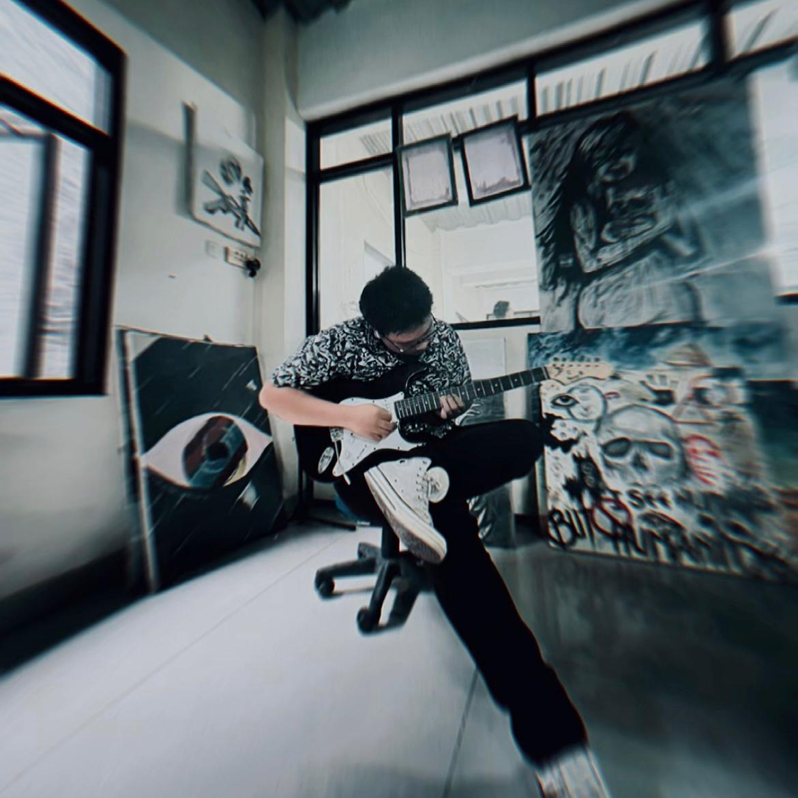

Hobi Bermain Alat Musik: Ekspresi Diri melalui Nada
29 April 2026
Selain prestasi akademik dan teknologi, saya memiliki hobi bermain alat musik yang menjadi cara favorit saya untuk melepas penat dan mengekspresikan diri. Piano menjadi instrumen pilihan saya karena kemampuannya menyampaikan emosi dalam berbagai genre, dari klasik hingga jazz kontemporer.
Memainkan alat musik mengajarkan saya kesabaran, disiplin latihan, dan kemampuan mendengarkan baik terhadap nada maupun rekan bermusik. Setiap nada yang saya mainkan membawa kebahagiaan dan ketenangan jiwa, seolah-olah dunia luar lenyap sejenak. Proses latihan yang konsisten mengingatkan saya bahwa mastery datang dari practice yang terstruktur, mirip dengan coding atau debugging program.
Hobi ini melengkapi kepribadian saya, menyeimbangkan aspek logika dari robotika dengan kreativitas seni. Musik mengajarkan improvisasi dan flow, sementara teknologi menuntut presisi – kombinasi sempurna untuk pemikiran holistik. Video bermain piano di atas adalah salah satu sesi latihan favorit saya, menangkap momen pure joy dalam menciptakan harmoni.
Di masa depan, saya berharap bisa menggabungkan passion ini dengan teknologi, mungkin membuat web app interaktif untuk komposer pemula atau generative music tools.